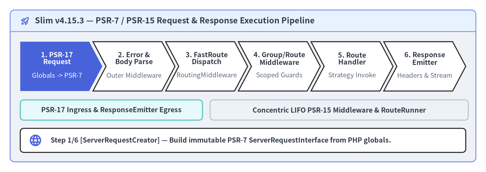
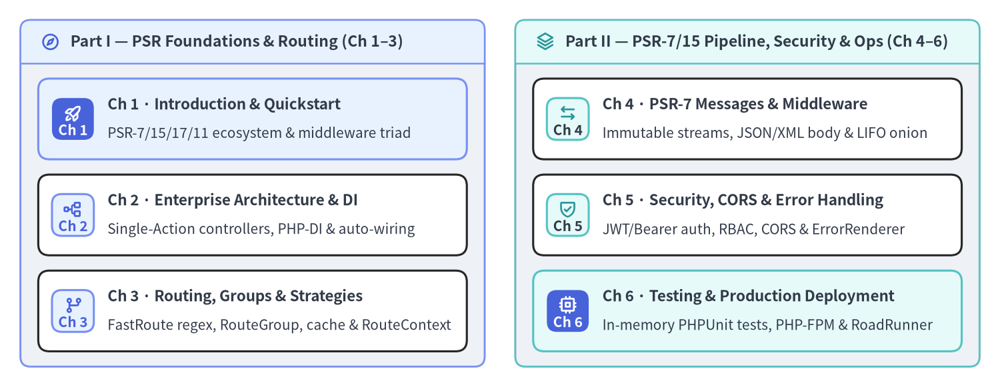

Slim Framework v4.15.3 — Practical User Guide
Slim (v4.15.3) is a lightweight, standards-first PHP micro-framework built strictly around PHP-FIG PSR interfaces—combining PSR-7 immutable HTTP message streams, PSR-15 concentric LIFO middleware and request handlers, PSR-17 HTTP factories, PSR-11 dependency injection containers, and Nikic FastRoute regular-expression dispatch. This unofficial bilingual developer guide walks systematically from your first endpoint to production modular architectures.

Source Code
from drawlib.anim import Animation
from drawlib.canvas import save, setup
from drawlib.icons import phosphor
from drawlib.shapes import rectangle
from drawlib.smartarts import ChevronProcess, Panel
from drawlib.styles import Styles
from drawlib.text import text
setup(width=192, height=68, dpi=150)
anim = Animation(fps=0.5)
stages = [
("1. PSR-17\nRequest", "Globals -> PSR-7"),
("2. Error &\nBody Parse", "Outer Middleware"),
("3. FastRoute\nDispatch", "RoutingMiddleware"),
("4. Group/Route\nMiddleware", "Scoped Guards"),
("5. Route\nHandler", "Strategy Invoke"),
("6. Response\nEmitter", "Headers & Stream"),
]
stage_notes = [
(
phosphor.globe,
"Step 1/6 [ServerRequestCreator] — Build immutable PSR-7 ServerRequestInterface from PHP globals.",
),
(
phosphor.shield_check,
"Step 2/6 [Error & BodyParsing] — Wrap pipeline in ErrorMiddleware and decode JSON/XML/Form body.",
),
(
phosphor.git_branch,
"Step 3/6 [RoutingMiddleware] — Match URI/method via FastRoute and attach RouteContext attributes.",
),
(
phosphor.stack,
"Step 4/6 [Group & Route Middleware] — Execute concentric LIFO route-group and route middlewares.",
),
(
phosphor.lightning,
"Step 5/6 [Route Handler] — Resolve controller via PSR-11 container and invoke via Strategy.",
),
(
phosphor.rocket_launch,
"Step 6/6 [ResponseEmitter] — Emit status line, headers, and chunked PSR-7 stream to client.",
),
]
for step in range(len(stages)):
is_last = step == len(stages) - 1
with anim.frame(duration=4.0 if is_last else 2.0, clear=True):
outer = Panel(
"Slim v4.15.3 — PSR-7 / PSR-15 Request & Response Execution Pipeline",
style=Styles.Neutral.patch(shape_r=2.0),
header_style=Styles.PrimaryNeutral.patch(shape_line_width=1.2),
text_style=Styles.DarkBold.patch(text_size=12.0),
icon=phosphor.rocket_launch,
icon_style=Styles.PrimaryBold,
header_variant="filled",
header_height=8.5,
)
outer.draw((4.0, 4.0), width=184.0, height=60.0)
s_style = Styles.SecondaryNeutral if step in (0, 5) else Styles.Neutral
r_style = Styles.PrimaryNeutral if 1 <= step <= 4 else Styles.Neutral
rectangle((44.0, 24.5), width=72.0, height=8.0, style=s_style.patch(shape_r=1.5))
text(
(44.0, 24.5),
"PSR-17 Ingress & ResponseEmitter Egress",
style=Styles.DarkBold.patch(text_size=10.2),
)
rectangle((134.0, 24.5), width=102.0, height=8.0, style=r_style.patch(shape_r=1.5))
text(
(134.0, 24.5),
"Concentric LIFO PSR-15 Middleware & RouteRunner",
style=Styles.DarkBold.patch(text_size=10.2),
)
proc = ChevronProcess(
style=Styles.White,
text_style=Styles.DarkBold.patch(text_size=10.2),
description_style=Styles.Muted.patch(text_size=9.8),
corner_angle=62.0,
spacing=1.5,
flat_left_end=True,
)
for i, (title, desc) in enumerate(stages):
if i == step:
c_style = Styles.PrimaryFlat
t_style = Styles.WhiteBold.patch(text_size=10.2)
d_style = Styles.White.patch(text_size=9.8)
elif i < step:
c_style = Styles.SecondaryNeutral if i == 0 else Styles.PrimaryNeutral
t_style = Styles.DarkBold.patch(text_size=10.2)
d_style = Styles.Dark.patch(text_size=9.8)
else:
c_style = Styles.White
t_style = Styles.DarkBold.patch(text_size=10.2)
d_style = Styles.Muted.patch(text_size=9.8)
proc.add(
title,
description=desc,
style=c_style,
text_style=t_style,
description_style=d_style,
)
proc.draw(xy=(8.0, 32.0), width=176.0, height=19.5)
rectangle((96.0, 12.5), width=176.0, height=9.5, style=Styles.White.patch(shape_r=1.5))
note_icon, note_text = stage_notes[step]
note_icon((14.0, 12.5), width=5.2, style=Styles.PrimaryBold)
text(
(20.0, 12.5),
note_text,
style=Styles.DarkBold.patch(text_size=10.2, halign="left"),
)
save()
Slim v4.15.3 at a Glance
Unlike monolithic frameworks that bundle proprietary HTTP objects, container implementations, and ORM layers, Slim 4 unifies standard PHP-FIG PSR contracts so you can plug in your preferred PSR-7 implementation (slim/psr7, nyholm/psr7, guzzlehttp/psr7, laminas/laminas-diactoros, or httpsoft/http-message) and PSR-11 container (php-di/php-di):
| Capability Area | v4.15.3 Standard & Component |
Practical Benefit for Application Teams |
|---|---|---|
| Supported PHP Versions | PHP 7.4 – 8.5 (strict_types=1) |
Broad compatibility with modern PHP 8.x attributes, readonly classes, and enums |
| HTTP Message Layer | PSR-7 (psr/http-message ^1.1 || ^2.0) & PSR-17 (psr/http-factory ^1.1) |
Immutable ServerRequestInterface and ResponseInterface streams with auto-detected factories |
| Middleware & Handlers | PSR-15 (psr/http-server-middleware & psr/http-server-handler ^1.0) |
Concentric LIFO middleware onion (MiddlewareDispatcher) reusable across any PSR-15 framework |
| Dependency Injection | PSR-11 (psr/container ^1.0 || ^2.0) & CallableResolver |
Lazy resolution of Class:method, __invoke() single-action controllers, and PSR-15 classes |
| URL Routing Engine | FastRoute (nikic/fast-route ^1.3) |
Compiled regex dispatch, nested RouteGroup prefixes, named URLs, and zero-overhead file cache |
| Error Handling & Logging | ErrorMiddleware, HttpSpecializedException, PSR-3 (psr/log) |
Content-negotiated error rendering (JSON, XML, HTML, PlainText) and structured exception mapping |
Minimal Front Controller in 25 Lines
A complete Slim 4 microservice requires only AppFactory::create(), the built-in middleware triad (addBodyParsingMiddleware(), addRoutingMiddleware(), addErrorMiddleware()), and a typed route handler:
<?php
declare(strict_types=1);
use Psr\Http\Message\ResponseInterface as Response;
use Psr\Http\Message\ServerRequestInterface as Request;
use Slim\Factory\AppFactory;
require __DIR__ . '/../vendor/autoload.php';
$app = AppFactory::create();
// 1. Parse JSON, form-urlencoded, and XML request bodies automatically
$app->addBodyParsingMiddleware();
// 2. Compute FastRoute match and populate RouteContext before auth/group middlewares
$app->addRoutingMiddleware();
// 3. Outermost catch-all exception boundary (added last -> executed first in LIFO)
$app->addErrorMiddleware(displayErrorDetails: true, logErrors: true, logErrorDetails: true);
$app->get('/api/v1/users/{id:[0-9]+}', function (Request $request, Response $response, array $args): Response {
$payload = json_encode([
'id' => (int) $args['id'],
'status' => 'active',
], JSON_THROW_ON_ERROR);
$response->getBody()->write($payload);
return $response->withHeader('Content-Type', 'application/json');
})->setName('users.show');
$app->run();
6-Chapter · 12-Page Developer Curriculum
This guide spans 6 chapters and 12 comprehensive pages, progressing systematically from PSR standards and the front-controller lifecycle to enterprise Single-Action Controller architecture, PHP-DI auto-wiring, FastRoute caching, concentric PSR-15 middleware pipelines, JWT/CORS security, content-negotiated error renderers, in-memory PHPUnit testing, and high-concurrency production runtimes:

Source Code
from drawlib.canvas import save, setup
from drawlib.icons import phosphor
from drawlib.smartarts import CardList, Panel
from drawlib.styles import Styles
setup(width=196, height=76, dpi=150)
left_panel = Panel(
"Part I — PSR Foundations & Routing (Ch 1–3)",
style=Styles.Neutral.patch(shape_r=2.0),
header_style=Styles.PrimaryNeutral.patch(shape_line_width=1.2),
text_style=Styles.DarkBold.patch(text_size=11.0),
icon=phosphor.compass,
icon_style=Styles.PrimaryBold,
header_variant="filled",
header_height=8.5,
)
left_panel.draw((4.0, 4.0), width=91.0, height=68.0)
l_xy, l_w, l_h = left_panel.get_content_box((4.0, 4.0), width=91.0, height=68.0, padding=(3.5, 3.0))
cl_left = CardList(
style=Styles.White,
text_style=Styles.DarkBold.patch(text_size=10.8),
description_style=Styles.Dark.patch(text_size=10.0),
badge_shape="rounded_rect",
badge_style=Styles.PrimaryNeutral,
badge_text_style=Styles.PrimaryBold.patch(text_size=10.0),
icon_style=Styles.PrimaryBold,
direction="vertical",
spacing=3.0,
)
cl_left.add(
"Ch 1 · Introduction & Quickstart",
"PSR-7/15/17/11 ecosystem & middleware triad",
badge_text="Ch 1",
icon=phosphor.rocket_launch,
style=Styles.PrimaryNeutral,
badge_style=Styles.PrimaryFlat,
badge_text_style=Styles.WhiteBold.patch(text_size=10.0),
icon_style=Styles.WhiteBold,
)
cl_left.add(
"Ch 2 · Enterprise Architecture & DI",
"Single-Action controllers, PHP-DI & auto-wiring",
badge_text="Ch 2",
icon=phosphor.tree_structure,
)
cl_left.add(
"Ch 3 · Routing, Groups & Strategies",
"FastRoute regex, RouteGroup, cache & RouteContext",
badge_text="Ch 3",
icon=phosphor.git_branch,
)
cl_left.draw(xy=l_xy, width=l_w, height=l_h)
right_panel = Panel(
"Part II — PSR-7/15 Pipeline, Security & Ops (Ch 4–6)",
style=Styles.Neutral.patch(shape_r=2.0),
header_style=Styles.SecondaryNeutral.patch(shape_line_width=1.2),
text_style=Styles.DarkBold.patch(text_size=11.0),
icon=phosphor.stack,
icon_style=Styles.SecondaryBold,
header_variant="filled",
header_height=8.5,
)
right_panel.draw((101.0, 4.0), width=91.0, height=68.0)
r_xy, r_w, r_h = right_panel.get_content_box((101.0, 4.0), width=91.0, height=68.0, padding=(3.5, 3.0))
cl_right = CardList(
style=Styles.White,
text_style=Styles.DarkBold.patch(text_size=10.8),
description_style=Styles.Dark.patch(text_size=10.0),
badge_shape="rounded_rect",
badge_style=Styles.SecondaryNeutral,
badge_text_style=Styles.DarkBold.patch(text_size=10.0),
icon_style=Styles.SecondaryBold,
direction="vertical",
spacing=3.0,
)
cl_right.add(
"Ch 4 · PSR-7 Messages & Middleware",
"Immutable streams, JSON/XML body & LIFO onion",
badge_text="Ch 4",
icon=phosphor.arrows_left_right,
)
cl_right.add(
"Ch 5 · Security, CORS & Error Handling",
"JWT/Bearer auth, RBAC, CORS & ErrorRenderer",
badge_text="Ch 5",
icon=phosphor.shield_check,
)
cl_right.add(
"Ch 6 · Testing & Production Deployment",
"In-memory PHPUnit tests, PHP-FPM & RoadRunner",
badge_text="Ch 6",
icon=phosphor.cpu,
style=Styles.SecondaryNeutral,
badge_style=Styles.PrimaryFlat,
badge_text_style=Styles.WhiteBold.patch(text_size=10.0),
icon_style=Styles.WhiteBold,
)
cl_right.draw(xy=r_xy, width=r_w, height=r_h)
save()
| Chapter | Pages & Core Topics | Key Slim 4 Classes & Interfaces Covered |
|---|---|---|
| 1. Introduction & Quickstart | Why Slim 4 & PSR Standards · Quickstart & Middleware Triad | App, AppFactory, ServerRequestCreatorFactory, Psr17FactoryProvider, ResponseEmitter |
| 2. Enterprise Architecture & DI | Modular Design & Action Controllers · PSR-11 DI & Callable Resolution | AppFactory::createFromContainer(), CallableResolver, AdvancedCallableResolverInterface, ContainerInterface |
| 3. Routing, Groups & Strategies | FastRoute Patterns, Groups & Caching · Invocation Strategies & RouteContext | RouteCollectorProxy, RouteCollector, RouteGroup, RouteParser, RouteContext, RequestResponseNamedArgs |
| 4. PSR-7 Messages & Middleware | PSR-7 Requests, Responses & Streams · PSR-15 Concentric LIFO Pipeline | BodyParsingMiddleware, MiddlewareDispatcher, RoutingMiddleware, MethodOverrideMiddleware, ContentLengthMiddleware |
| 5. Security, CORS & Error Handling | JWT Auth, RBAC Guards & CORS · ErrorMiddleware & Custom Renderers | ErrorMiddleware, ErrorHandler, HttpSpecializedException, JsonErrorRenderer, ErrorRendererInterface |
| 6. Testing & Production Deployment | In-Memory HTTP Testing with PHPUnit · Nginx, PHP-FPM & Worker Runtimes | $app->handle($request), RouteCollector::setCacheFile(), OPcache preloading, RoadRunner / FrankenPHP workers |
Official Resources & Companion Portals
- Upstream Attribution & Official Documentation: Slim Framework was created by Josh Lockhart and is maintained by the Slim Framework team (Josh Lockhart, Andrew Smith, Rob Allen, Pierre Berube, and Gabriel Manricks) under the MIT License. For official documentation and release announcements, visit https://www.slimframework.com/ and github.com/slimphp/Slim.
- Companion Portals in This Suite:
- Slim 4 User Guide (
slim.drawlib.com) — Practical bilingual handbook and architectural patterns (this site). - Slim 4 API Reference (
slim.drawlib.com/api/) — Complete class, interface, method, and signature catalog for Slimv4.15.3. - Slim 4 Internal Architecture (
slim.drawlib.com/architecture/) — Deep-dive intoApp,MiddlewareDispatcher,CallableResolver, and FastRoute internals. - PNI501 Security & Quality Audit (
slim.drawlib.com/reports/pni501/) — Verification report and static analysis audit of the Slim 4 codebase.
- Slim 4 User Guide (
- Where to Start: Begin with Chapter 1: Why Slim 4 & PSR Standards to understand how PSR-7, PSR-15, PSR-17, PSR-11, and FastRoute fit together, or jump directly to Quickstart & Middleware Triad to boot your first service.